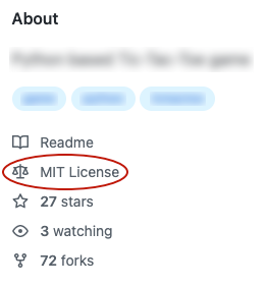

Le code emprunté
Note
Adaptation Web de la présentation préparée par Christiane Lagacé, enseignante en Techniques de l’informatique au Cégep de Victoriaville, 2022.
Qu'est-ce que le code emprunté?
Il s’agit de code que vous n’avez pas écrit, ou que vous avez adapté, et que vous utilisez dans votre programme, par exemple :
- Extraits de code
- Gabarits ou squelettes
-
Algorithmes en provenance de :
- Notes de cours
- Web
- Documentation officielle
- Générateurs de code, incluant copilot et ChatGPT
- ou ailleurs
Est-ce que j’ai le droit d’utiliser du code emprunté?
- Ça dépend de l’enseignante ou enseignant.
- Ça dépend également de la provenance et du contexte.
- Par exemple, ce n’est pas permis dans un cours d’algorithmie.
Conditions pour utiliser du code emprunté
- Obtenir l’autorisation de l’enseignante ou enseignant.
- Citer vos sources en précisant l’auteur et/ou l’URL où le code a été trouvé (exemples fournis plus loin).
- Comprendre chacune des lignes de code (vous devez être prêts en tout temps à expliquer le code).
- Lorsque requis, adapter le code emprunté à votre situation (sinon, le code risque de ne pas répondre à votre besoin).
Pourquoi citer les sources?
- D'abord, ceci permet de rendre à César ce qui est à César.
- Ensuite, il sera plus facile de retrouver le code original et d'en comprendre le contexte (« Ah, oui! C'est de là que m'était venue cette idée! »).
- De plus, si vous omettez de citer vos sources, vous pourriez être accusés de plagiat.
Comment citer les sources
Citer la source d’une fonction empruntée
- Citer la source dans le commentaire de documentation de la fonction.
- Lorsque le code est utilisé tel quel, il faut ajouter la mention « Source » suivie de l'URL. Vous devez conserver le nom de l'auteur original.
- Si vous avez adapté le code, la mention sera « Inspiré de » suivie de l'URL. Vous pouvez à ce moment indiquer votre nom comme nom d'auteur.
/** * Vérifie si l'usager est authentifié. * * @param string $usager Code d'usager * @param string $motDePasse Mot de passe crypté avec password_hash * * @author Annie Gagnon <anniegagnon@gmail.com> * Inspiré de https://... * @return Boolean true si code d'usager et mot de passe valides, false si non valides * */
Citer la source d’un extrait emprunté
- Citer la source dans un simple commentaire et indiquer où le code emprunté se termine.
- Ici encore, la citation parlera de « Source » lorsque le code est utilisé tel quel et de « Inspiré de » lorsque le code a été modifié.
// gestion des erreurs
// Code emprunté. Source : https://...
if (DEVEL === true) {
error_reporting(E_ALL);
ini_set('display_errors', '1');
}
else {
error_reporting(E_ALL & ~E_STRICT & ~E_DEPRECATED);
ini_set('display_errors', '0');
}
// Fin du code emprunté
Code emprunté en provenance de la documentation officielle
- Vous devez juger si la source doit être citée.
- Si c'est évident que c'est LA façon d'utiliser telle ou telle fonctionnalité, le code sera considéré comme une utilisation naturelle et la source n'aura pas à être citée.
- Dans le cas où il y a un peu plus de « tricottage », il faut citer la source. Après tout, votre code a été inspiré d'un extrait que vous n'avez pas écrit.
// version PHP (ligne inspirée de https://www.php.net/manual/fr/function.phpversion.php)
$versionMajeurePHP = intval(explode('.',PHP_VERSION)[0]);
Code généré par ChatGPT
Voir la page explicative pour citer une IA.
Droits de réutilisation de code stipulés par une licence
- Exemples de licences : GPLv3 (GNU General Public License, version 3), GPLv2, Apache 2.0, BSD (Berkeley Software Distribution), MIT.
- C’est votre responsabilité de vérifier si les droits du code emprunté sont stipulés par une licence.
- Certaines licences vous obligent à rendre votre code public s'il utilise le code protégé, à documenter les modifications apportées au code emprunté, etc.
- Notez que dans un contexte pédagogique, le département sera souple au sujet de ces licences.
- Plus d’informations à ce sujet dans les cours de fin de DEC.

Est-ce que je peux réutiliser mon propre code?
Qu'est-ce que l'autoplagiat?
Selon l'UQAM1, l'autoplagiat : C'est lorsqu’une étudiante ou un étudiant remet un travail, ou une partie de travail, qui a déjà été soumis à un enseignant pour évaluation. Autrement dit, c'est refiler le même travail dans deux cours différents.
Extrait de la PIEA2 du Cégep de Victoriaville
4.3 Plagiat, tricherie et fraude
Le Cégep accorde une importance majeure à l’intégrité intellectuelle. Dans l’intention d’en faire un objet d’apprentissage et de sensibiliser la population étudiante à ce sujet, une formation obligatoire est offerte par la Direction des études ou par la Direction de la formation continue aux nouvelles étudiantes et aux nouveaux étudiants. La formation est suivie de la signature d’un contrat d’engagement basé sur le respect de l’intégrité intellectuelle et sur le présent article.
4.3.1 Champ d’application et définition
Peut être accusé de plagiat, de tricherie ou de fraude un étudiant ou une étudiante qui commet une des fautes listées ci-dessous.
-
Est considéré comme du plagiat, de la tricherie ou de la fraude (liste non exhaustive), peu importe le type d’évaluation :
- Le fait de rapporter des informations, de quelque nature que ce soit, sans en citer la source ou la référence ou en la falsifiant ;
- Le fait de remettre une évaluation dont les idées, la structure ou la formulation sont similaires ou identiques à celle d’une tierce personne, que cette évaluation soit récente ou non ;
- Le fait de s’autoplagier, c’est-à-dire de remettre une évaluation ou une partie d’évaluation déjà réalisée dans un cours, et ce, sans avoir obtenu au préalable l’autorisation explicite de l’enseignante ou de l’enseignant du ou des cours concernés ;
- Le fait de falsifier des données ;
- Le fait de faire réaliser une évaluation, en tout ou en partie, par une tierce personne ;
- Le fait de consulter la copie d’une autre étudiante ou d’un autre étudiant lors d’un examen ;
- Le fait d’aider une personne à copier ou à tricher lors d’une évaluation ;
- Le fait de consulter ou de diffuser, avant une évaluation, son contenu ou ses solutions ;
- Le fait d’utiliser du matériel ou des ressources non autorisés lors d’une évaluation, quelle qu’en soit la forme ;
- Le fait de quitter et de réintégrer une période d’évaluation sans autorisation préalable de l’enseignante ou de l’enseignant.
Comment éviter l'autoplagiat?
- Obtenir la permission de l'enseignante ou enseignant, et
- Vous citer comme source.
Comment éviter le plagiat par distribution de matériel?
- Ne prêtez jamais votre code à une autre étudiante ou à un autre étudiant.
- Ne publiez jamais de code en lien avec des travaux scolaires dans un dépôt public sur GitHub ou autre.
- En cas de doute sur la légitimité d’une publication, demandez à votre enseignante ou enseignant.
-
« Tricherie et intégrité académique - Qu'est-ce que l'autoplagiat? ». UQAM https://r18.uqam.ca/7-faq/13-qu-est-ce-que-l-autoplagiat.html ↩
-
« Politique institutionnelle d'évaluation des apprentissages. » Cégep de Victoriaville https://www.cegepvicto.ca/wp-content/uploads/2023/04/Politique-institutionnelle-devaluation-des-apprentissages-PIEA.pdf ↩